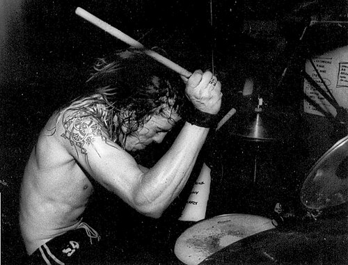

Nirvana
GRUNGE / ALTERNATIVE ROCK
Seattle'i trio, kes 1991. aastal albumiga Nevermind muutis rockmuusika igaveseks. Kurt Cobain'i karm laulustiil ja meloodilised riffid tegid neist kogu maailma hääle.
Rock ja metal ei ole ainult muusika – need on liikumised, mis muutsid maailma. Tutvu kolme ikooni looga.

GRUNGE / ALTERNATIVE ROCK
Seattle'i trio, kes 1991. aastal albumiga Nevermind muutis rockmuusika igaveseks. Kurt Cobain'i karm laulustiil ja meloodilised riffid tegid neist kogu maailma hääle.

HEAVY METAL / HARD ROCK
Black Sabbathi endine laulja ja "Metali Ristiisaks" tituleeritud artist. Tema solokarjäär tõi maailmale hitte nagu Crazy Train ja Mr. Crowley.

NU-METAL / ALTERNATIVE METAL
Iowa üheksa liikmeline jõud, kelle sünge visuaalne identiteet ja maruline muusika tegi neist 2000ndate ühe kõige mõjukaima metal-bändi.
Rock-muusika on olnud vabaduse sümbol juba aastakümneid. See sai alguse 1950ndate Rock and Roll'ist ning on arenenud lugematuteks alamžanriteks. Metali tulek 70ndatel lisas helipilti raskust ja tehnilisust, pakkudes väljundit miljonitele mässumeelsetele noortele.
Täna on need žanrid elavamad kui kunagi varem, ühendades inimesi üle kogu maailma suurte festivalide ja kontserdielamuste kaudu.
Chuck Berry, Elvis Presley
Led Zeppelin, AC/DC, Deep Purple
Black Sabbath, Iron Maiden, Judas Priest
Nirvana, Pearl Jam, Soundgarden
Radiohead, Pixies, R.E.M.
Linkin Park, Slipknot, Korn
Saa värskeimad uudised, kontserdiinfo ja eksklusiivsed pakkumised otse oma meilile.